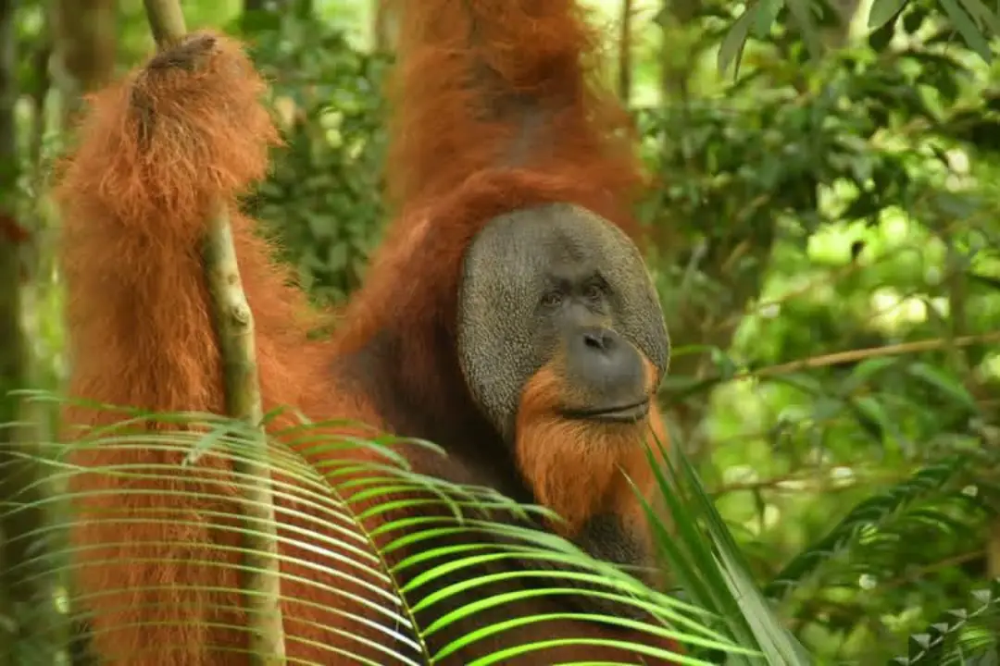

3-Day Jungle Trek
Go further into the jungle, with two nights among the rainforest sounds

Three days gives you the time to really get into the rhythm of the jungle, trekking further and deeper than the shorter tours reach. You'll spend your days spotting wildlife with Jos — macaques, Thomas leaf monkeys, pig-tailed macaques, and orangutans, with a chance of encountering a large dominant male as well. Each day includes a fresh jungle lunch and fruit snacks, and both nights you'll enjoy a cooked dinner and sleep in simple jungle huts with mosquito nets, falling asleep to the sounds of the rainforest around you. By the final day, you'll have covered real ground and seen a wide range of what this jungle has to offer. As with the shorter tours, you'll finish by floating back to town down the river on an inner tube. A solid choice for travelers who want a proper jungle expedition without going all the way to a full week.
How to book this tourItinerary
A rough outline of the day — actual timing may vary depending on wildlife sightings and group pace
-
PLACEHOLDER: Day 1, e.g. 8:00 AM
PLACEHOLDER: Briefing & Start
PLACEHOLDER: Where and when the group meets Jos, what the briefing covers.
-
PLACEHOLDER: Day 1, e.g. 8:30 AM
PLACEHOLDER: Trekking begins
PLACEHOLDER: Entering the jungle, deeper trails than the shorter tours.
-
PLACEHOLDER: Day 1, e.g. 12:30 PM
Jungle Lunch
PLACEHOLDER: Details about the lunch stop and fruit snack.
-
PLACEHOLDER: Day 1, e.g. 6:00 PM
Dinner & Overnight in Jungle Hut
PLACEHOLDER: Details about the cooked dinner and the hut/mosquito net setup for the night.
-
PLACEHOLDER: Day 2, full day
PLACEHOLDER: Deeper into the jungle
PLACEHOLDER: Second day of trekking, reaching quieter/deeper parts of the forest, lunch and fruit snack along the way.
-
PLACEHOLDER: Day 2, evening
Dinner & Second Night in Jungle Hut
PLACEHOLDER: Details about the second night's dinner and stay.
-
PLACEHOLDER: Day 3, e.g. 7:00 AM
PLACEHOLDER: Breakfast & Final Trek
PLACEHOLDER: Morning routine, final stretch of trekking on day 3.
-
PLACEHOLDER: Day 3, e.g. 1:00 PM
River Tubing Return
PLACEHOLDER: Details about the tubing trip back to town.
-
PLACEHOLDER: Day 3, e.g. 2:00 PM
Tour Ends
PLACEHOLDER: Where the tour ends / drop-off point.
What's Included
- Local guide (Jos or a team member)
- Jungle trekking as per itinerary
- 3x jungle lunch
- Fruit snacks
- 2x cooked dinner
- 2x overnight stay in a jungle hut with mosquito net
- River tubing return to town
- PLACEHOLDER: any other inclusions specific to this tour
Looking for the full packing list and fitness requirements? Check our Equipment & What to Bring guide.